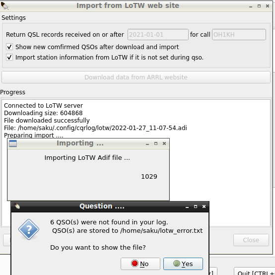
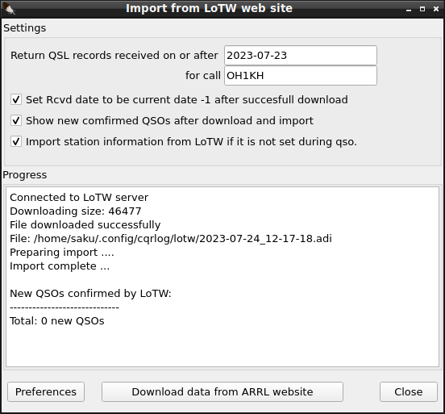

| WARNING!
Backup your data often! BACKUP your log file at the end of ANY session!
All what you need to backup and store in a safe place is the main log
database cqrlog.fdb located in the /log_data folder. |
CQRLOG for LINUX by OK2CQR & OK1RR

LoTW support
Preparation
Assume that you have a working LoTW Account. If you are new to LoTW, read carefully the instructions provided by ARRL and set up properly your account.
Very important is the certificate. ARRL issues certificates (.tq8) which are bound to a particular machine and cannot be transferred to another place. If you receive a .tq8 certificate, it is
absolutely essential to convert it to more usual .p12 format which
can be transferred. Do this immediately!
Download and install the LoTW utilities (
tqsl and
tqslcert). The original Linux utilities are obsolete and won't compile and run with any recent version of wxwidgets. They have been reworked by Petr, OK2CQR to compile with wxwidgets-2.8.x series. The updated version of
Trusted QSL download
here (sources, SuSE and Fedora packages). Ubuntu and Debian have this package in their repositories. Slackware packages download
here.
Setup

If you didn't it already in the 'Preferences' setup procedure, provide your user name for LoTW and the password (this is not the password sent to US amateurs via postcard!).
Now you need to select a certificate corresponding to the QTH you used while making the QSOs you want to confirm. Check the certificates available by opening tqslcert which displays all certificates.

Now select the proper certificate in tqsl. If you have single certificate only, you don't need to make any selection, however note the name of the QTH which must be entered into CQRLOG.


The QTH profile name here is 'Praha'. The callsign is added by default however only the name (here 'Praha') should be entered into tqsl command line arguments: column of the QSL->LoTW->Export->Upload to LoTW window.

Once entered, the QTH name stays in the predefined command line.
LoTW file export and upload
1. Select the QSO records you want to confirm. Good choice is a filter for date, QSL received etc.
Now, there are two possibilities:
I. Export the selected records to a local ADIF file. This is useful if you don't want (or it is impossible) to upload your log to LoTW. Go to QSL->LoTW->Export->Export QSOs to LoTW adif file

Provide a file name and put it to Export to: field.

If you want to mark the exported QSO records, do it now. Click the Export button and go to Upload to LoTW menu item. The ADIF file can be signed and uploaded later.
Another option is export, signing and upload your log to LoTW at a glance.
II. export, signing and upload your log to LoTW from CQRLOG
Go to Upload to LoTW card and choose QSO records which should be exported:

Click the
Export & sign button. You should see:
Signing adif file ...
Signed ...
If you did not see any errors, you can send signed file to LoTW
website by pressing Upload button
Now click the
Upload button. A message
Uploading file ...
Size: xxxxx
Uploading was succesful
This procedure can be checked in following way: in the /cqrlog/lotw folder should appear two new files - an ADIF file named date_time.adi (where date and time corresponding to the date and time of creation) and the signed file with the same file name but .tq8 extension which is then uploaded to the LoTW site. Finally, you can check the
LoTW site. Log in and go to
Your Account -> Your Activity and you should see your last upload with the date, time and file name.
LoTW files download and processing
The main purpose of the LoTW files processing (also download) is to mark existing QSO records as confirmed via LoTW. Files can be downloaded directly into CQRLOG or an already downloaded ADIF files can be processed.

Both options shown here. If the Import local LoTW ADIF file (already downloaded from the LoTW site) is processed, a simple progress indicator is shown.

If you choose Download and process data from LoTW website a progress indicator is displayed.

The Size changes while downloading, if finished it indicates the total file size. When download finishes, a summary appears and the import begins, showing the same progress indicator as above.

If the file is not accessible (due to server overload etc.), an error message is shown. Also if the file contains a record which is not in your log, a warning message appears.